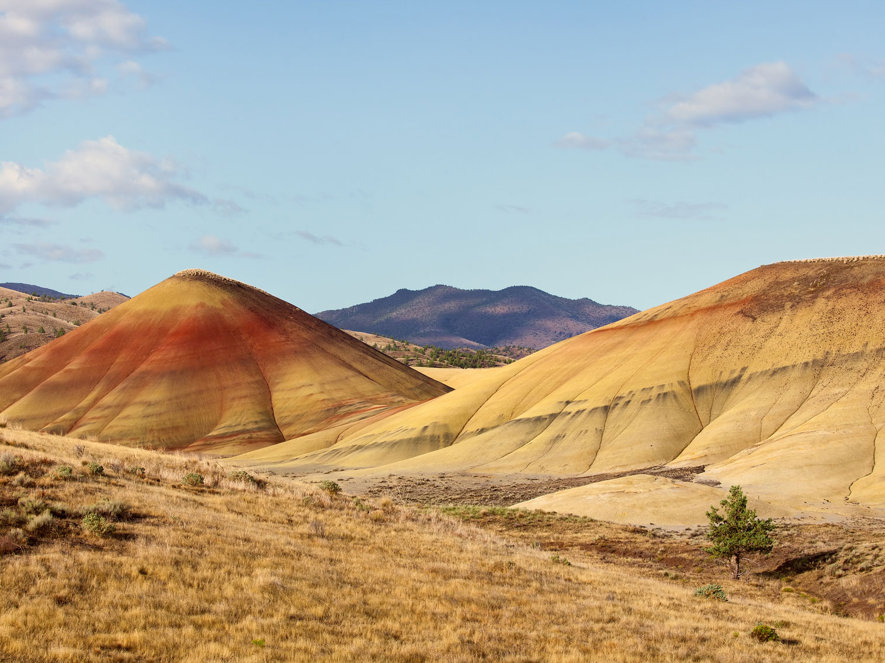
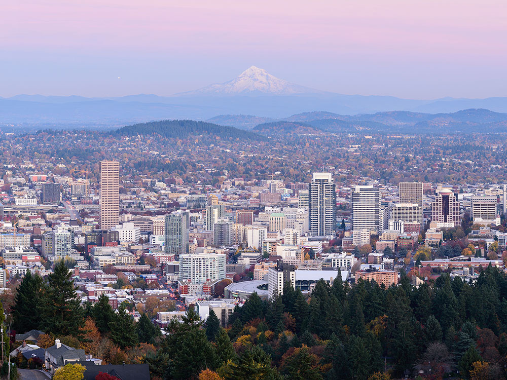
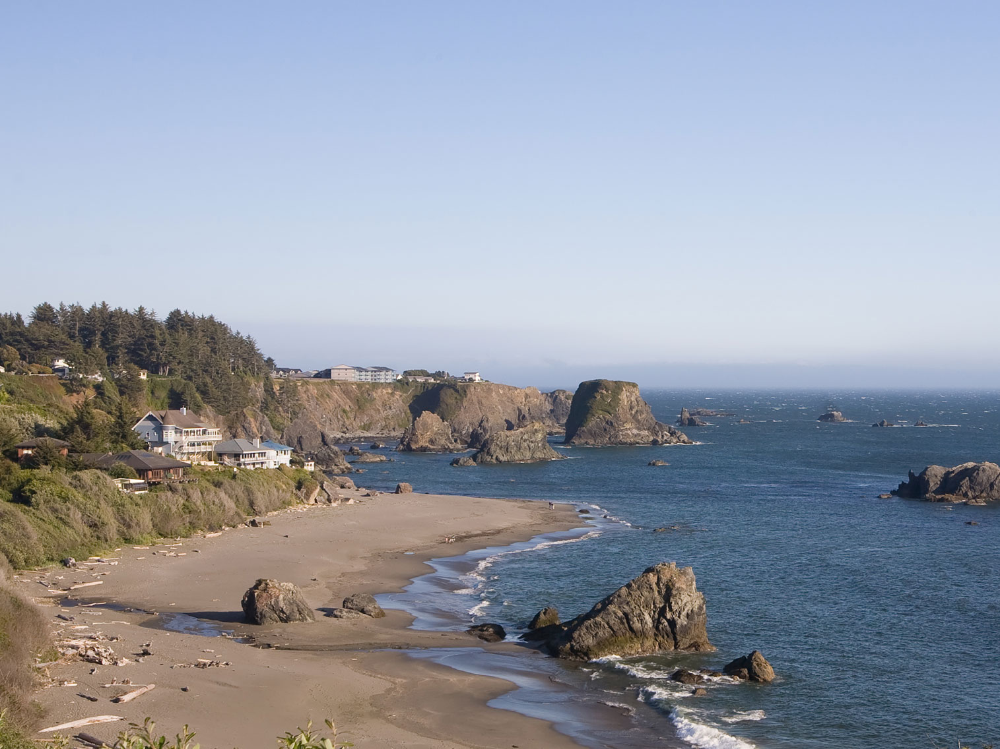
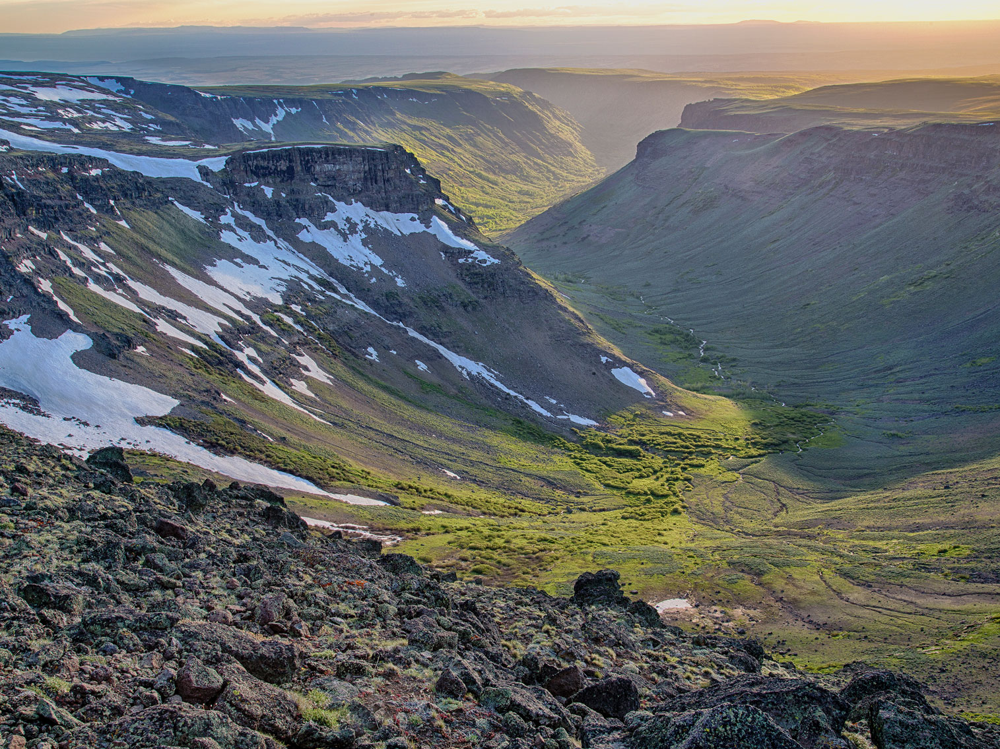
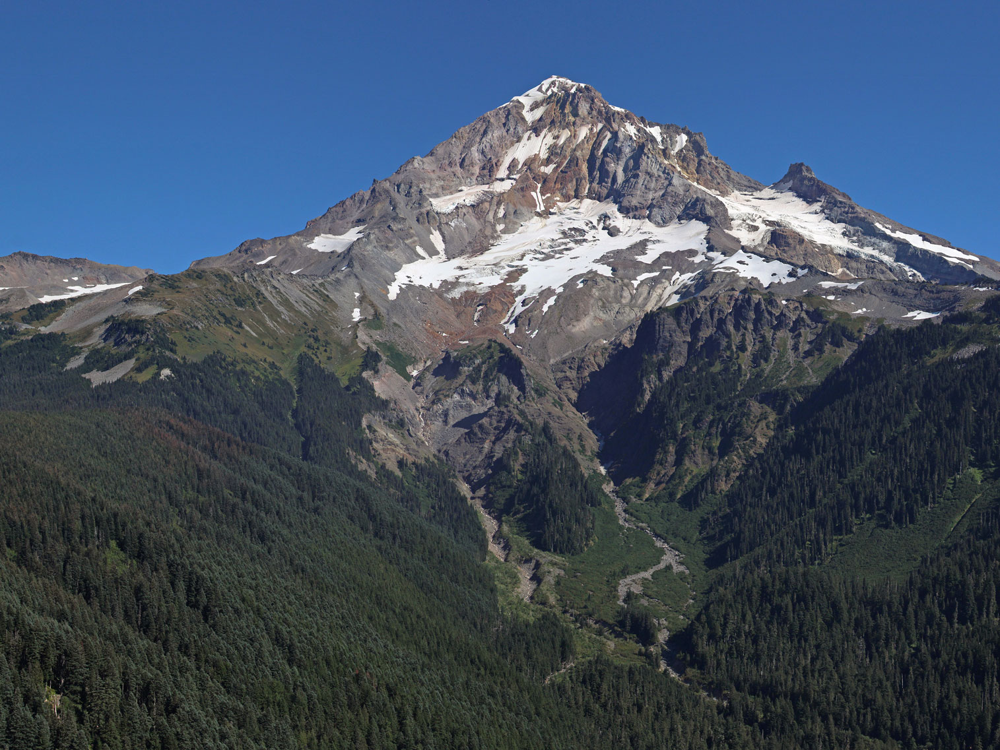

Oregon Travel Guide
Drive the dramatic Pacific coastline, hike volcanic peaks, and explore Portland's food scene amid Oregon's forests, waterfalls, and high deserts.
Top Locations


-400.jpg)


Oregon Map
Places to See in Oregon
Crater Lake National Park★
National park encompassing the caldera of Crater Lake, the deepest lake in the United States, the second-deepest in North America, and the surrounding hills and forests

Painted Hills
Photography by User: MrX, CC BY-SA 3.0, via Wikimedia Commons Image Size Adjusted


Portland from Pittock Mansion
King of Hearts, CC BY-SA 4.0, via Wikimedia Commons Image Size Adjusted

Portland★
Largest and most populous city in Oregon and a major port in the Willamette Valley region of the Pacific Northwest, at the confluence of the Willamette and Columbia rivers in Northwestern Oregon and has earned a reputation as a bastion of counter-culture

Chetco Point
Cacophony, CC BY-SA 3.0, via Wikimedia Commons Image Size Adjusted
Oregon Coast★
Coastal region of Oregon stretches approximately 362 miles (583 km) from the California state border to the Columbia River in the north with over 80 state parks and recreation areas
Columbia River Gorge★
Canyon of the Columbia River in the Pacific Northwest up to 4,000 feet (1,200 m) deep, stretching for over eighty miles as the river winds westward through the Cascade Range, forming the boundary between the state of Washington to the north and Oregon

Steens Mountains
Bureau of Land Management, Public domain, via Wikimedia Commons Image Size Adjusted
.jpg){kind=link}
Southeast Oregon★
Southeastern Oregon is a geographical term for the area along the borders of Oregon with Idaho, California, and Nevada. It includes the populous areas of Burns, Klamath Falls and Lakeview. The region is also known by its nickname of the Oregon Outback.

Mount Hood
Walter Siegmund, CC BY-SA 4.0, via Wikimedia Commons Image Size Adjusted

Oregon Landmarks and Landscapes
Overview
Oregon is a Pacific Northwest state of remarkable variety, and people come for its scenery, its outdoor recreation, and its relaxed, creative cities. Within a few hours' drive a traveler can move from a wild public coastline to snow-capped volcanoes, rain-fed evergreen forests, waterfall-lined river canyons, and wide high-desert basins. Salem is the capital, and Portland is the largest city.
Visitors come to hike to waterfalls, walk the beaches and tide pools, photograph Crater Lake and Mount Hood, ski, fish, and paddle, and to enjoy Oregon's food, craft beer, and wine, especially the pinot noir of the Willamette Valley. Oregon is also known for its lack of sales tax, its attendant-pumped gas, and its beaches, which are public land along the entire coast.
Geography
Oregon is the ninth-largest state by area and is divided by the Cascade Range into two very different halves. West of the Cascades, the mild, wet Willamette Valley holds most of the state's population, flanked by the Coast Range and the Pacific shoreline. East of the mountains, the rain shadow creates sagebrush steppe, juniper woodland, canyons, and desert basins that reach all the way to the Idaho border. The Columbia River forms most of the northern boundary, and the Snake River carves Hells Canyon along the east. Mount Hood, at 11,249 feet, is the highest point, and the state's volcanic peaks, including Mount Jefferson, are part of the Cascade volcanic arc.
History
Native peoples, including the Chinook, Clatsop, Kalapuya, Umatilla, Nez Perce, Klamath, and Paiute, lived in the region for thousands of years. The Lewis and Clark Expedition wintered near the mouth of the Columbia in 1805-06, and fur traders followed. Beginning in the 1840s, thousands of pioneers traveled the Oregon Trail, which ended in the Willamette Valley (see the National Historic Oregon Trail Interpretive Center and End of the Oregon Trail museum). The Oregon Country became a U.S. territory in 1848, and Oregon was admitted as the 33rd state on February 14, 1859. Timber, farming, fishing, and later technology have all shaped its economy.
Portland
Portland, set where the Willamette meets the Columbia, is known for its parks, bridges, bookstores, food carts, and views of Mount Hood. Highlights include the International Rose Test Garden, the Portland Japanese Garden, the Lan Su Chinese Garden, Powell's City of Books, the Portland Aerial Tram, and the Pittock Mansion. The city is also a convenient base for the Gorge, Mount Hood, wine country, and the coast.
Columbia River Gorge
East of Portland, the Columbia River Gorge is a river canyon through the Cascades that is lined with more than 70 waterfalls, including 620-foot Multnomah Falls. The Historic Columbia River Highway offers scenic stops such as Crown Point and Vista House, while hikes like Eagle Creek and Dog Mountain draw hikers. Farther east, the wind makes the Hood River area a world-famous destination for windsurfing and kiteboarding. The Gorge is a National Scenic Area.
Oregon Coast
The Oregon Coast stretches for about 362 miles along U.S. Route 101, with sea stacks, lighthouses, tide pools, and sand dunes. Visitors can explore Astoria near the Columbia's mouth, Cannon Beach and Haystack Rock, Tillamook and its cheese, Cape Perpetua, the Oregon Dunes, and the rugged southern shoreline near Samuel H. Boardman. The coast is popular for whale watching, storm watching, beachcombing, and fishing.
Southeast Oregon
Southeast Oregon is one of the most remote regions in the lower 48, a land of high desert, fault-block mountains, playas, and hot springs often called the Oregon Outback. Its centerpiece is Steens Mountain, with its glacier-carved gorges, and nearby are the Alvord Desert and hot springs, Malheur National Wildlife Refuge, a major stop for migrating birds, Hart Mountain, the Owyhee River, and Diamond Craters. The region has very little development and some of the darkest night skies in the country.
National Protected Areas
Oregon's only national park is Crater Lake National Park, with the deepest lake in the United States at 1,943 feet. Newberry National Volcanic Monument protects lava flows, cinder cones, and crater lakes near Bend, and John Day Fossil Beds National Monument preserves colorful hills such as Painted Hills and a long fossil record. Oregon Caves National Monument and Preserve is a marble cave in the Siskiyou Mountains. Recreation areas include Hells Canyon, the deepest river gorge in North America, the Oregon Dunes, and the Columbia River Gorge National Scenic Area, and Lewis and Clark National Historical Park and the Oregon National Historic Trail preserve the state's early history.
State Parks and Historic Sites
Oregon's state parks are among the most visited in the nation, and many are on the coast and in the Gorge. Favorites include Silver Falls State Park, where a trail passes behind several waterfalls, Smith Rock State Park for climbing and hiking, Ecola State Park, Shore Acres State Park, Jessie M. Honeyman, and Harris Beach. Historic places include Lewis and Clark Salt Works, Philip Foster Farm, and Port Orford Heads.
Seasons and When to Visit
Oregon can be enjoyed in every season. Summer (July to September) is the driest and busiest time, ideal for hiking, camping, the coast, Crater Lake (whose rim road is usually fully open by then), and Southeast Oregon. Fall brings colorful foliage, the grape harvest, and quieter trails. Winter brings skiing and snowboarding at Mount Hood and Bend, along with storm watching and whale watching on the coast. Spring is the time for waterfalls at full flow, wildflowers in the Gorge and eastern Oregon, and the Portland Rose Festival in June. Western Oregon can be rainy from October through May, while the east is hot in summer and cold in winter, and many high-elevation roads close with snow.
This article uses material from the Wikipedia article "Oregon", which is released under the Creative Commons Attribution-Share-Alike License 3.0. Additional information was drawn from the National Park Service, Oregon State Parks, the Columbia River Gorge National Scenic Area, and Travel Oregon.